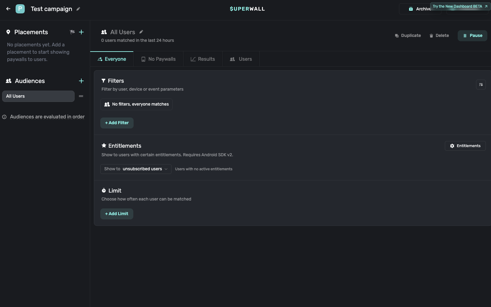
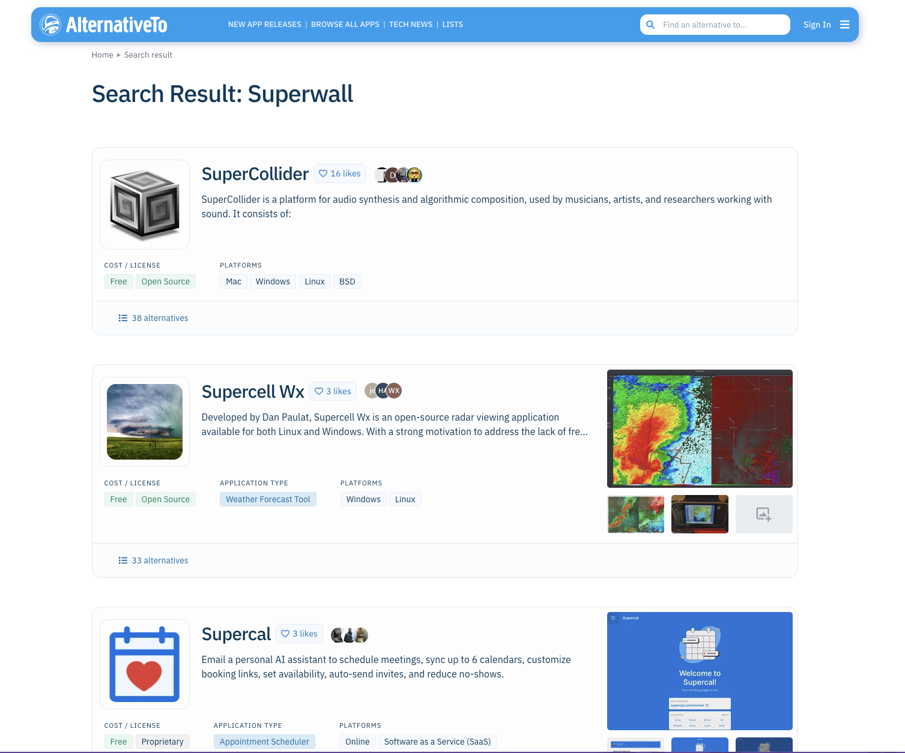

Brand identity: canonical profileUpdated:2026-08-14For: Superwall Alternatives for Indie iOS Apps
Art director's note
Five real files are now available: the decision diagram, a Superwall editor capture, a Superwall audience-configuration capture, and two AlternativeTo evidence captures. The editor is publishable product evidence. The campaign screen does not show a placement or paywall relationship, and the AlternativeTo images remain subject to narrow claims and verification gates.
5
Assets
5
Produced files
2
Conditional/archival
The assets
Superwall alternatives decision flow
Diagram · 1600×1180 · in-body decision section
produced
Superwall paywall editor
Real product screenshot · 1526×1123 · primary evidence
produced
Superwall’s real paywall editor, with the component tree beside an iPhone paywall preview. Captured Aug 14, 2026.
Superwall campaign audience controls
Real product screenshot · 1606×1006 · optional/archive
produced

Superwall’s campaign audience controls. This test campaign has no placements or paywalls configured, so the screen does not demonstrate a live paywall connection.
The direct AlternativeTo URL /software/superwall/ returned “404 – Page not found” on Aug 14, 2026. This does not establish that no listing exists under another URL.
AlternativeTo search results
Website screenshot · 1507×1255 · archive only
produced

The visible search results show similarly named products. This partial capture does not prove that no exact Superwall listing exists.
Brand consistency
Visual system
The authored diagram uses IndieAppStack’s paper, ink, pine, and muted-gold system. Documentary captures retain each vendor’s authentic interface without recoloring or invented annotation.
Accessibility
All five files have purpose-specific alt text. Captions define what each screenshot does and does not prove; source captures should be displayed at natural width or smaller.
Still needed
Confirm capture/account and editorial-use rights. Reproduce the AlternativeTo direct-URL result in a second browser or independent network before publishing the dated 404 claim.
Deliberately out of scope
Real evidence, narrow claims.
No Superwall or AlternativeTo interface was fabricated.
The campaign capture remains optional because it shows no placements or paywalls and contains Android-specific copy.
The AlternativeTo search capture is archive-only.
No CMS placement, public deploy, or Notion stage update was performed.